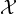
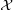
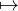

This note shows that the Hilbert’s metric distance in the probability simplex is a non-separable distance which satisfies the information monotonicity.
Consider the open cone ℝ++d of positive measures (i.e., histograms with d positive bins) with its open probability simplex subset Δd = {(x1,…,xd) ∈ ℝ+d : ∑ i=1dxi = 1}.
The f-divergence [1] between p,q ∈ Δd is defined for a convex function f(u) such that f(1) = 0 and f(u) strictly convex at 1 by:
For example, the Kullback-Leibler divergence is a f-divergence for f(u) = -log u.
All f-divergences are separable by construction: That is, they can be expressed as sum of coordinate-wise scalar divergences: Here, If[p : q] := ∑ i=1dif(p[i] : q[i]), where if is a scalar f-divergence. Moreover, f-divergences are information monotone: That is, let  = {X1,…,Xm} be a partition of {1,…,n} into m ≤ n pairwise disjoint subsets Xi’s. For p ∈ Δn, let p|∈ Δm denote the induced probability mass function with p|(i) = ∑ j∈Xip[i]. Then we have
Moreever, it can be shown that the only separable divergences satisfying this partition inequality are f-divergences [1] when n > 2. The special curious binary case n = 2 is dealt in [5].
Now, consider the non-separable Hilbert distance in the probability simplex [6]:
This dissimilarity measure is a projective distance on ℝ++d (Hilbert’s projective distance) because we have DHilbert[λp,λ′q] = DHilbert[p,q] for any λ,λ′ > 0. However, the Hilbert distance is a metric distance on Δd.
We state the main theorem:
Theorem 1 The Hilbert distance on the probability simplex is an information monotone non-separable distance.
Proof: We can represent the coarse-graining mapping pp| by a linear application with a m × n matrix A with columns summing up to one (i.e., positive column-stochastic matrix):
For example, the partition = {X1 = {1,2},X2 = {3,4}} (with n = 4 and m = 2) is represented by the matrix
Now, a key property of Hilbert distance is Birkhoff’s contraction mapping theorem [2, 3]:
where Δ(A) is called the projective diameter of the positive mapping A:
Since 0 ≤ tanh(x) ≤ 1 for x ≥ 0, we get the property that Hilbert distance on the probability simplex is an information monotone non-separable distance:
Notice that this holds for positive matrices and thus it includes the case of real matrix coefficients encoding deterministic Markov kernels. □
Another example of non-separable information monotone distance is Aitchison’s distance on the probability simplex [4] (using for compositional data analysis).
[1] Shun-ichi Amari. Information geometry and its applications, volume 194. Springer, 2016.
[2] Garrett Birkhoff. Extensions of Jentzsch’s theorem. Transactions of the American Mathematical Society, 85(1):219–227, 1957.
[3] PJ Bushell. On the projective contraction ratio for positive linear mappings. Journal of the London Mathematical Society, 2(2):256–258, 1973.
[4] Ionas Erb and Nihat Ay. The information-geometric perspective of compositional data analysis. In Advances in Compositional Data Analysis, pages 21–43. Springer, 2021.
[5] Jiantao Jiao, Thomas A Courtade, Albert No, Kartik Venkat, and Tsachy Weissman. Information measures: the curious case of the binary alphabet. IEEE Transactions on Information Theory, 60(12):7616–7626, 2014.
[6] Frank Nielsen and Ke Sun. Clustering in Hilbert’s projective geometry: The case studies of the probability simplex and the elliptope of correlation matrices. In Geometric Structures of Information, pages 297–331. Springer, 2019.